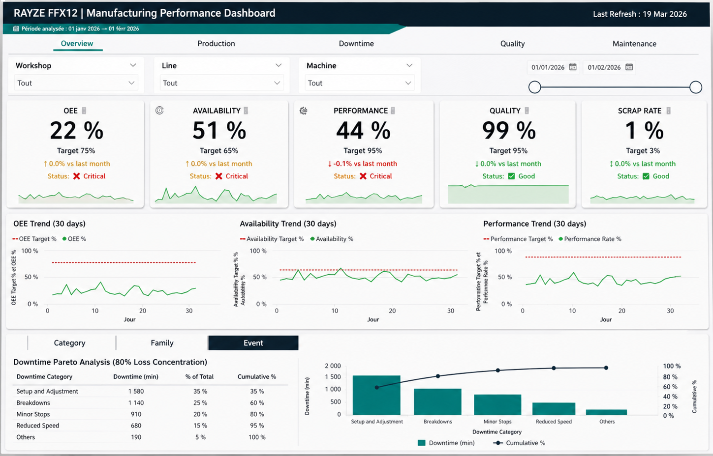

Transformation des données de production en décisions terrain concrètes.
Décomposition du dashboard pour identifier rapidement les sources de pertes.

Ce système transforme les données de production en indicateurs simples pour rendre les pertes visibles et aider les équipes à agir rapidement.
L’objectif n’est pas de faire de la data complexe, mais de donner une lecture claire de la performance au quotidien.
Données issues du terrain (machines, opérateurs)
Structuration et identification des pertes
Actions ciblées sur les causes principales
Un arrêt machine est détecté sur la ligne.
Le système permet d’identifier rapidement la cause principale (ex : problème d’alimentation, réglage ou organisation).
Le responsable peut alors prioriser l’action et réduire le temps de perte sur les prochains cycles.
Je ne me contente pas de mesurer la performance. J’identifie ce qui doit être mesuré pour comprendre réellement les pertes.
J’analyse les chaînes de dépendances entre équipements, pour comprendre comment une défaillance locale impacte toute la ligne.
Mon objectif est de rendre visibles les mécanismes de dégradation, afin de permettre aux équipes de corriger les causes racines plutôt que de subir les symptômes.
Le système repose sur la collecte de données de production, leur structuration et la création d’indicateurs simples via Excel, Python et Power BI.
Vous souhaitez mettre en place ce type de pilotage dans votre atelier ?
Échanger sur votre besoin Détail technique (GitHub)